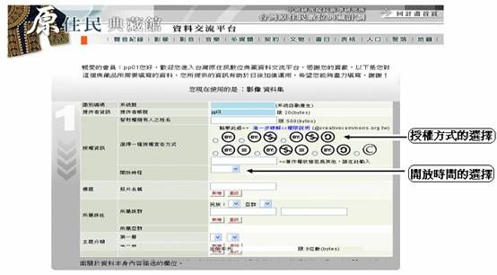

2007-10-05
前言：潘英海老師，曾任職於中研院民族學研究所，現任職於暨南大學人類學所，並曾擔任原住民數位典藏計畫第一期計畫主持人及人類學主題小組召集人，對於原住民資料數位化保存及數位內容應用與交換不遺餘力。此次特別邀請潘老師，藉由其實際經營原住民數位典藏所面臨的授權問題來切入，討論創用CC授權在數位授權上的實際應用。
數位內容產業在發展的過程中，授權是最令人頭痛的問題。第一期數位典藏國家型科技計畫（2002～2006）在執行的過程中，也不例外，授權一直是最難處理的問題。在執行數位典藏計畫的過程中，數位授權之所以不容易處理主要是的原因有好幾種：（一）執行數位化工作的單位或個人，並不一定是內容的所有者；（二）內容所有者不一定擁有該內容的智產權；（三）擁有內容智產權，但不等於擁有數位形式的內容智產權；（四）擁有數位內容授權，但是針對每一筆資料時，同一授權者可能有不同的態度。數位授權若沒解決，當然就影響到數位內容的流通以及數位內容產業的發展。
針對數位授權的問題，近年國際間推行「創用 CC 授權」（creative commons）的概念，而此運動在國內正方興未艾。「創用 CC 授權」的精神主要是讓數位內容的權利擁有者，願意釋放出某些（或是部分）權利，讓數位物件得以流通，以促進數位資訊的交流與分享。然而，「創用 CC 授權」的精神如何普及於數位典藏國家型科技計畫卻是個難題。有鑑於第一期的教訓，第二期國家型科技計畫開始實施時，總計畫辦公室就要求各個計畫主持人簽署數位內容授權的同意書，但在實踐上卻是個問題。
我們認為，授權同意書的簽署是基於一種「給錢的是老大」之心態，「強迫」計畫主持人釋放數位內容的權利。我們認為這種方式不值得鼓勵，是一種違反「數位人權」的作法，並沒有尊重數位內容提供者的專業判斷。雖然近年來總計畫也在鼓吹「創用授權」的作法，但是效果不彰，我們認為主要是因為許多數位內容是提供者（個人或單位）的心血，並不是一個「創用」的概念就可以說服所有人。中央研究院民族學研究所執行的「台灣原住民數位典藏國家行科技計畫」（以下簡稱「台灣原住民數典計畫」）也無可避免地遇到相同的問題。如眾所周知，解決數位內容授權的問題不僅是曠日廢時，更常面臨的是百般無奈的窘況。「台灣原住民數典計畫」為了此問題，設計了一套解決方案，在此提出來供大家參考。
「台灣原住民數典計畫」的想法很簡單，我們在系統整體規劃時，在後設資料的規劃中加了「開放時間」屬性與「授權方式」屬性的兩個欄位。前者是針對每一筆數位資料預定開放的時間進行管理上的設定，例如：從資料進入資料庫後的一年、二年、三年或五年等等；後者是針對每一筆數位資料的授權狀況進行管理，例如：版權所有（copyright）或採用創用 CC 授權的狀況。下列圖示說明了「台灣原住民數典計畫」從後設資料的規劃處理複雜的數位物件的授權問題。

簡單地說，「台灣原住民數典計畫」認為每一筆數位物件都有不同的授權狀況，我們不可能用一種授權的模式含括整個資料庫中所有的數位物件。
要之，目前數位授權可遵循兩種模式：「版權所有」與「創用 CC 授權」。前者雖然保護了數位物件的所有者或授權用有者，但是數位物件不易流通，因為使用者與數位物件擁有的個人或單位聯繫、溝通、取得授權的過程需要許多時間；後者雖然鼓勵數位物件的流通，但是對於數位物件提供者而言，他可能並不是願意將所有的物件都以創用 CC 授權的方式流通。
因此，如果我們可以讓數位物件提供者，或是提供單位，針對每一筆數位物件來決定該數位物件的開放時間和該數位物件的授權方式。我們相信不但數位內容容易流通，數位授權的問題也變得單純多了。